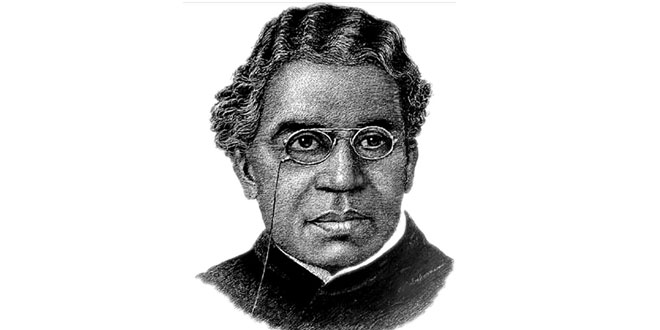

Sir Jagadish Chandra Bose:- Bengali: 30 November 1858 – 23 November 1937),
also spelled Jagdish and Jagadis, was a Bengali polymath, physicist, biologist,biophysicist, botanist and archaeologist,
and an early writer of science fiction.
Sir Jagadish Chandra Bose was born in Munshiganj, Bengal Presidency, (present-day Bangladesh) on 30 November 1858.
His father, Bhagawan Chandra Bose, was a leading member of the Brahmo Samaj and worked as a deputy magistrate and assistant commissioner in Faridpur,
Bardhaman and other places.
plant research
His major contribution in the field of biophysics was the demonstration of the electrical nature of the conduction of
various stimuli (e.g., wounds, chemical agents) in plants, which were earlier thought to be of a chemical nature. These
claims were later proven experimentally.[27] He was also the first to study the action of microwaves in plant tissues and
corresponding changes in the cell membrane potential. He researched the mechanism of the seasonal effect on plants,
the effect of chemical inhibitors on plant stimuli and the effect of temperature. From the analysis of the variation of
the cell membrane potential of plants under different circumstances, he hypothesised that plants can "feel pain,
understand affection etc."
BACK TO MAIN PAGE